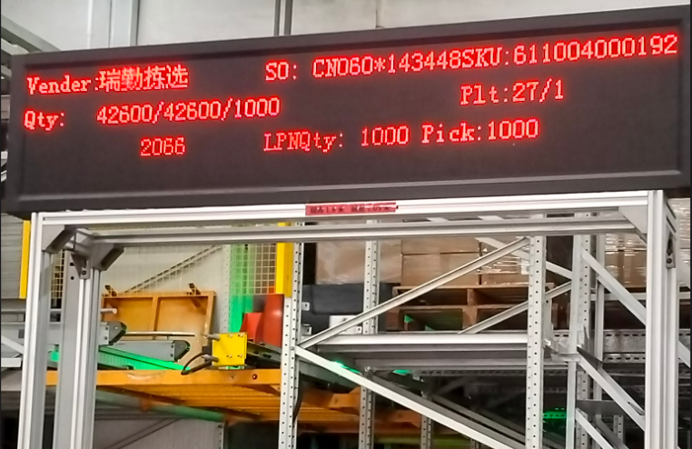
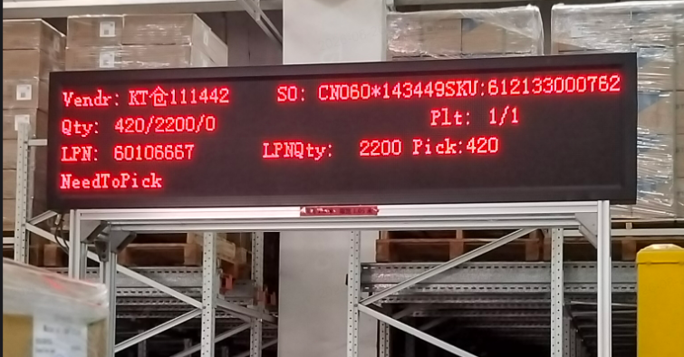

FWMS 上游业务
- 查询、分配、发放及取消出库单。
- 出库单查询字段：生产领料的外部单号 1 为申请单号；品检退料单的外部单号 2 为发运单号；部门领料单的外部单号 1 为 MO 文件编号。
- 下发允许短拣标识。
- 提供 UPN 拆分、标签打印服务。
- 接收实际拣货结果并完成最终发货。
覆盖出库单处理、库存预占、下架搬运、拣货回传及余料 / 空托收尾。
适用于音锋自动化库出库，以及与出库闭环有关的余料回库、空托入库、清障和回库上架搬运。本方案不展开正常入库、理货、盘点、隔离筛选和质检还料流程；上述业务产生的回库复用第 7 节回库策略。
1～6 号工作台均支持整托直出和PDA拣货；各口点位及余料、空托处理路径如下。
| 业务口 | 设备点位 | 作业与拣货能力 | 余料回库 | 空托处理 |
|---|---|---|---|---|
| 1号 | 281 | 标准出库口；支持整托直出和PDA拣货 | 有余料时由叉车叉底托投 4 号口（263）回库 | 移除中间木托 → 红外识别底托为空托 → 自动送叠盘机 |
| 2号 | 282 | 标准出库口；支持整托直出和PDA拣货 | 有余料时由叉车叉底托投 4 号口（263）回库 | 移除中间木托 → 红外识别底托为空托 → 自动送叠盘机 |
| 3号 | 283 | 出库口；支持整托直出和PDA拣货；承接 5 / 6 号口空托及叠满托盘 | 有余料时由叉车叉底托投 4 号口（263）回库 | 红外识别后自动送叠盘机；当前无线外投放空托场景 |
| 4号 | 263（兼作入库口） | 出库口；支持整托直出和PDA拣货；兼作余料、叠满托盘入库口 | 本口即 263 回库 / 入库口，余料直接转入回库流程 | 不承担红外识别；空托由现场转入既有空托入库链路 |
| 5号 | 260 | 标准出库口；支持整托直出和PDA拣货 | 托盘仍在位时可按物理回库按钮 | 【PDA - 搬运至其他出库口】送 3 号口 → RCS 反馈搬出 / 到达 → 红外识别 → 自动送叠盘机 |
| 6号 | 259 | 标准出库口；支持整托直出和PDA拣货 | 托盘仍在位时可按物理回库按钮 | 【PDA - 搬运至其他出库口】送 3 号口 → RCS 反馈搬出 / 到达 → 红外识别 → 自动送叠盘机 |
| 叠盘机 | 设备本体 | 接收经 1 / 2 / 3 号口红外识别为空托的底托，自动叠盘；叠满后自动输送至 283；不涉及拣货 | 不接收有料托盘 | 空底托叠盘 → 叠满后送 283 →【PDA - 空容器入库】→ 叉车转 263 入库 |
单据准备 → 预占与搬运 → 到口拣货 → 实拣回传 → 余料回库或空托入库。出库单完成拣货即回传，FWMS 后续发货不等待余料、空托处理完成。
业务场景：FWMS 出库单明细行超过配置上限，需要拆成多个 WCS 出库单执行。
| 规则项 | 功能与规则 |
|---|---|
| 触发与配置 | FWMS 出库单同步校验成功后，按“仓库 + 出库单据类型”匹配自动拆单配置；单据最大明细行数为 1～99 的正整数。 |
| 拆分方式 | 超过上限时按物料明细行拆分，不拆分单条明细行数量；保留原单号、拆单序号和明细归属。 |
| 不拆分条件 | 未匹配配置时不触发自动拆单；匹配配置但未超过上限时保留一个 WCS 出库单。 |
| 后续处理 | 生成的 WCS 出库单进入接单及合单预占处理。 |
业务场景：新建出库单按类型和优先级定时处理，减少仓管员逐单执行。每 5 分钟批量处理为未来建设能力。
| 规则项 | 功能与规则 |
|---|---|
| 策略与对象 | 【自动接单策略】配置指定出库单据类型和优先级；检测完成拆单判断后的新建 WCS 出库单。 |
| 定时执行 | 每 5 分钟处理本窗口内的新建订单：先按合单预占条件组成合并组，不满足合单条件的订单独立执行。 |
| 目标工作台 | 匹配【WCS - 策略管理 - 下架策略】确定目标工作台并分发。 |
| 执行结果 | 与【WCS - 出库单据 - 执行】一致：按实际需求预占库存，确定拣货方式，生成下架任务和搬运任务。 |
| 未命中与防重复 | 未命中自动接单策略的订单保持新建状态；已成功执行的订单不得因重复扫描再次预占或建任务。 |
业务场景：SKD 产线属于生产领料类单据，同一交货地（客户/拉线）、同一物料代码的散单高频出现。符合条件的订单共同预占库存，减少重复下架和回库。
| 规则项 | 功能与规则 |
|---|---|
| 合单条件 | 订单类型、交货地（客户/拉线）、物料代码、MAPPING 一致。MAPPING 关系对照表一般已包含外部单号、供应商等属性。 |
| 汇总与分配 | 将多个出库单中满足合单条件的明细行汇总需求数量，再按汇总需求数量统一分配库存；不满足合单条件的明细行不纳入该合并组。 |
| 自动合单 | 自动接单时处理同一 5 分钟窗口的候选订单；后续窗口新单不加入已完成预占的旧合并组。 |
| 手动合单 | 在【WCS - 出库单据 / 出库明细】选择多个单据，校验通过后生成合并组；在【WCS - 出库单据】先【指定工作台】再【执行】。 |
| 条件不一致 | 按合单条件对明细行分组，条件不同的明细行分别处理，不合并、不提示；满足相同条件的明细行仍可合单预占。 |
| 库存不足处理 | 与普通订单一致，执行失败并报错，不生成有效下架、搬运任务，不能自动转为短拣。 |
| 单据与结果归属 | 仅生成合并组号，不生成新的出库单。每个 UPN、预占量和实拣量归属原 FWMS 订单明细。 |
业务场景：当前容器除当前搬运任务识别的订单外，还关联其他订单的下架任务；或后续订单预占剩余库存后共同覆盖整托。
| 策略状态 | 拣货范围与顺序 |
|---|---|
| 未配置或未命中 | 仅处理当前容器中当前搬运任务识别的订单，不汇总其他订单判断整托直出；当前订单自身满足整托直出条件时按第 5 节执行。 |
| 已配置并命中 | 将当前容器关联且符合策略的订单纳入拣货范围。PDA 先拣当前搬运任务识别的订单，再按下架任务顺序处理其他匹配订单；每次只执行一个下架任务，数量和结果分别归属原订单。 |
| 凑成整托 | 按策略确定的订单范围汇总预占量，并按第 5 节检查整托全出、同一交货地（客户/拉线）及完整 UPN 分配条件。 |
按下架策略完成库存预占，确定拣货方式后，再进入下架与多进深清障。
“临期大库龄优先”为可配置的前置优先策略，默认不开启；开启后先处理临期库存，再处理大库龄库存，剩余需求进入上述常规流程。
规则、配置及案例详见 《音锋仓下架策略-整托优先方案》。
普通订单与合并组均校验可用库存；不足时执行失败并提示，不生成有效下架、搬运任务，不转为短拣。
WCS 按订单实际需求数量预占库存。例如订单需求 420、匹配托盘库存 2200 时，只预占 420；无论预占托盘全部还是部分库存，该托盘的预占托盘数均计 1。
前一订单按实际需求预占后，托盘剩余库存可继续供其他订单预占。是否将多个订单作为同一拣货范围处理，由合单拣货策略决定。
单一订单预占当前托盘全部库存；或命中合单拣货策略的订单汇总预占量覆盖托盘全部库存。无需拆箱或拆分 UPN。托盘到达出库口即自动拣货并扣减库存；原出库单完成拣货时回传 FWMS。
托盘仅部分出库、同托订单交货地（客户/拉线）不同，或需要拆箱、拆分 UPN 时，在【PDA - 拣货出库】作业。订单范围及执行顺序按第 4.4 节合单拣货策略处理。
按各 UPN 的实际库存数量，判断能否将完整 UPN 分配给各订单；需要拆分任一 UPN 时，执行 PDA 拣货。以下多订单案例均已命中合单拣货策略，除特别说明外属于同一交货地（客户/拉线）。
| 托盘实际 UPN 库存组成 | 托盘库存 | 订单分配 | 判定 |
|---|---|---|---|
| 10 个 UPN，每个库存 100 | 1000 | 非合单：900 | 仅分配 9 个完整 UPN，托盘剩余 100，执行 PDA 拣货。 |
| 当前托盘 10 个 UPN，每个库存 100 | 1000 | 非合单：订单需求 1100 | 当前托盘 1000 全部分配，整托直出；另托预占 100，若仅占该托部分库存则执行 PDA 拣货。 |
| 9 个 UPN，每个库存 100 | 900 | 合单：300 + 300 + 300 | 每个订单分配 3 个完整 UPN，托盘全部出库，整托直出。 |
| 10 个 UPN，每个库存 100 | 1000 | 合单：300 + 300 + 400 | 各订单分别分配 3、3、4 个完整 UPN，托盘全部出库，整托直出。 |
| 9 个库存 100 的 UPN + 1 个库存 50 的 UPN | 950 | 合单：350 + 300 + 300 | 350 分配 3 个 100 的 UPN 和 1 个 50 的 UPN；两个 300 各分配 3 个 100 的 UPN。无需拆分 UPN，整托直出。 |
| 9 个库存 100 的 UPN + 1 个库存 50 的 UPN | 950 | 合单：350 + 350 + 250 | 一个 350 可分配 3 个 100 的 UPN 和唯一的 50 UPN；剩余完整 UPN 无法分配出另一个 350 和 250，须拆分一个 100 的 UPN。即使需求合计等于托盘库存，也不能整托直出，执行 PDA 合单拣货。 |
| 10 个 UPN，每个库存 100 | 1000 | 300（交货地（客户/拉线）A）+ 700（交货地（客户/拉线）B） | 同托存在不同交货地（客户/拉线），执行 PDA 拣货。 |
A、B 为同巷道两条货道，01～03 表示由外向内的排列位置，不是托盘LPN。两个案例均以 A 货道三托在位为前提；B 货道为空，作为阻挡托移库目标。下表从上到下为内侧至母车轨道。
| 位置方向 | A 货道（初始有托盘） | B 货道（初始为空） |
|---|---|---|
| 内侧 / 最深位 | A03 | B03 |
| 中间位置 | A02 | B02 |
| 外侧 / 最靠近母车轨道 | A01 | B01 |
| 母车轨道（从此侧取放托盘） | ||
| 场景与目标位置 | 阻挡位置 | 搬运顺序 | 结果 |
|---|---|---|---|
| 混托区 / 单托区（3 进深）：预占 A03 处托盘 | A01、A02 | ① A01 → B03；② A02 → B02；③ A03 处托盘出库。 | 移库托盘留在 B03、B02，不回 A 货道。 |
| 多板区：预占 A02 处整托 | A01（尾托） | ① A01 尾托移至同巷道 B 货道指定深度；② A02 处目标托盘出库；③ 尾托放回原 A 货道的 A02 位置。无空货道时 LED 报错，人工呼叫出库，作业完成后再回库。 | 只移动一托外侧尾托；一个托盘下发一个移库任务。 |
操作入口：PDA 首页独立菜单【PDA - 搬运至其他出库口】，支持在各出库口之间调整托盘搬运目的地。
| 业务场景 | 现场处理 |
|---|---|
| 5 / 6 号口整托直出 | 托盘到口后，选择搬运至 1 / 2 / 3 号口，替代音锋控制屏手动改向；叉车取走物料后，空托盘自动送至叠盘机。 |
| 混托区无空位 | 一般将 5 / 6 号口托盘搬运至 4 号口，叉出后在线外暂存；4 号口繁忙时，现场可直接从 5 / 6 号口叉下，在线外暂存。 |
| 其他出库口调整 | 按现场需要选择 1～6 号目标出库口，执行托盘输送线搬运。 |
| 页面字段 / 操作 | 功能规则 |
|---|---|
| 起始点位 | 必填，自动填充当前工作台点位。 |
| 容器编号 | 必填，自动填充当前托盘LPN。 |
| 目标点位 | 必填，单选，选项为 1～6 号出库口。 |
| 执行 | 点击【执行】后，WCS 生成搬运任务并调用 RCS-11 下发；入参为容器号（托盘LPN）、任务号、起始点位、目标点位，返回成功 / 失败。 |
| 搬运反馈 | RCS 通过 RCS-12 反馈搬出成功和到达，WCS 更新托盘位置及对应出库口 LED。 |
| 拣货结果 | 整托直出已在首次到口时完成自动拣货和库存扣减，搬运至其他出库口后不重复执行。 |
| 控制项 | 触发时机 | 规则 | 结果 |
|---|---|---|---|
| 现场短拣 | 【PDA - 拣货出库】提交拣货 | 仅 FWMS 标识允许短拣的单据可勾选；合并组中哪个原单拣选不足，短少归属哪个单。 | 二次确认，按实际数量完成并回传。 |
| 扫描数量超过最终需求 | PDA 扫描后累计量超过 FWMS 最终需求 | WCS 拦截本次扫描，不更新库存与实拣结果。 | 按剩余需求拆分或更换 UPN 后重新扫描。 |
| FWMS 指定 UPN | 出库单下发 / 预占 | 严格限制在指定 UPN 范围；冻结 UPN 只有对应业务类型明确允许时才能出库。 | 指定库存不可用时不得自动替换为普通库存。 |
| 扫描 UPN 不属于当前可拣任务 | 【PDA - 拣货出库】扫描 UPN | 校验 UPN 是否属于当前已激活的下架任务；同一容器其他订单的 UPN 须等待对应任务按顺序激活。 | 拦截本次扫描，不更新拣货量和库存。 |
| UPN 拆分失败 | FWMS / WCS 拆分交互 | 保留原 UPN，不更新 WCS 库存，不生成成功打印结果；修复接口或数据后重试。 | 当前拣货任务保持未完成。 |
| LED 展示 / 刷新失败 | 任务下发分配、到口、离口、成功扫码、清除占位成功或待处理队列变化 | 记录失败事件；重试前由 WCS 按当前点位状态重新选择显示内容，幂等下发最新信息，避免旧 LPN 或旧业务画面覆盖当前显示。 | 不回滚已成功的单据执行、搬运或拣货结果。 |
| 实拣结果回传失败 | WCS → FWMS | 保留已记录的实拣结果，按原出库单号幂等重试，不重复扣减库存。 | 标记待回传，不阻塞已触发的余料或空托实物处理。 |
背景与适用范围：异常托盘调整后重新投线，或更换其他托盘投线时，若 RCS 仍保留原托盘占位，扫码器将无法识别后续 LPN。当前通过 PLC 电控系统手动清除占位；未来运维人员不再允许直接操作 PLC，因此新增【PDA - 清除站点托盘占位】，适用于入库口、出库口。
失败处理：RCS 清除失败时提示失败原因，允许重试；WCS 不将点位标记为已清除。


| 屏显字段 | 业务含义 |
|---|---|
| Vendor | 供应商 / 货源标识。 |
| SO | FWMS 出库单号 / SO。 |
| SKU | 当前作业物料编码。 |
| Qty（QTY） | 示例：6000 / 6000 / 0。三个值依次为：①当前订单需求数量；②当前订单预占数量；③当前订单累计已拣数量，均按“订单 + 物料代码明细行”统计。WCS 按订单实际需求数量预占；每成功扫描一次 UPN，将该 UPN 数量累计到第三个值。 |
| Plt（PLT） | 示例：27 / 1。第一个值为当前订单预占托盘个数，第二个值为当前订单累计已拣托盘个数，均按“订单 + 物料代码明细行”统计；托盘只预占部分库存也计为 1 个预占托盘。 |
| LPN | 当前到口托盘的完整托盘LPN。 |
| LPNQty（LPNQTY） | 当前托盘上需要拣选的物料总数量；每成功扫描一次 UPN，按该 UPN 数量实时扣减。 |
| Pick（PICK） | 待拣数量；每成功扫描一次 UPN，按该 UPN 数量实时扣减。 |
| NeedToPick / NoPick | NeedToPick：需要人工进入【PDA - 拣货出库】作业；NoPick：整托直出，无需人工拣货，系统已自动执行拣货。 |
| 场景 | 触发条件 | LED 内容 | 交互规则 |
|---|---|---|---|
| 出库口无托盘、有待处理任务 | 搬运任务已下发分配到该出库口，且该口当前无托盘 | 最早待处理任务对应的业务信息（出库单、盘点、隔离筛选等） | 按搬运任务下发分配到该出库口的时间升序选择最早待处理任务，由 WCS 下发其对应业务信息；有托盘时优先显示当前 LPN，后续任务不能覆盖。 |
| 整托直出到口 | 托盘到达已分配的 1～6 号任一工作台，且判定为整托直出 | Vendor、SO、SKU、Qty、Plt、LPN、LPNQty、Pick、NoPick | WCS 优先下发当前到口 LPN 的实时业务信息并显示 NoPick，同时自动完成拣货和库存扣减；同一到口事件只处理一次。 |
| PDA 拣货到口 | 托盘到达已分配的 1～6 号任一工作台，且需要人工拣选 | 通用字段 + NeedToPick；Qty 显示初始累计已拣量，Pick 显示初始待拣数量 | WCS 优先下发当前到口 LPN 的实时业务信息，包含 LPN、LPNQty、Pick 和 NeedToPick，等待操作人员进入【PDA - 拣货出库】。 |
| PDA 拣货进行中 | PDA 每成功扫描一个 UPN | Qty 第三个值按 UPN 数量增加；LPNQty、Pick 按 UPN 数量扣减；单据、SKU、LPN 等上下文保持不变 | 当前在位 LPN 的一个 UPN 成功扫码对应一次库存实时扣减和一次 WCS → RCS 刷新；扫码失败、校验失败或重复事件不触发、不重复累计；旧 LPN 的延迟事件不得覆盖当前画面。 |
| PDA 拣货完成 | 最后一个 UPN 成功扫码后，本托达到应拣量 | Qty 第三个值完成本托累计；LPNQty、Pick 扣减至 0；Plt 第二个值累计增加 1 个已拣托盘 | 沿用最后一个 UPN 的扫码刷新，不额外新增一次“完成”调用；托盘存在部分预占也按 1 个已拣托盘累计，WCS 继续按出库单完成条件记录并回传实拣结果。 |
| 回库无可用货道 | 按《音锋仓回库策略方案》的货道匹配算法未找到可用货道 | 当前托盘LPN及“无可用货道”异常提示 | 回库无可用库位时，PDA 报错，WCS 请求 RCS 在回库点位对应的 LED 显示错误提醒；重新分配后按最新结果更新提示。 |
| 清除站点托盘占位成功 | RCS-13 返回成功 | 按点位状态重新选择的业务信息 | WCS 更新点位信息并重新选择显示对象；重新投线识别 LPN 后，优先显示当前 LPN 的实时信息。 |
| 待处理队列变化 | 该出库口待处理搬运任务队列发生变化 | 当前 LPN 的实时信息，或最早待处理任务对应的业务信息 | WCS 重新判断显示对象；有托盘时保持当前 LPN 优先，无托盘时按搬运任务下发分配到该口的时间升序选择。 |
| 托盘离开工作台 | 托盘已离开出库口 | 按当前点位状态重新选择的 LPN 实时信息或最早待处理任务的业务信息 | 停止刷新旧 LPN；由 WCS 重新判断点位状态，有托盘时展示当前 LPN，无托盘时按搬运任务下发分配到该口的时间升序展示最早待处理任务对应的信息。 |
各场景的单据和库存处理按对应业务规则执行；接口定义见入库方案中的 WCS 与 RCS 接口清单。
回库无位处理：按回库策略未找到可用库位时，PDA 报错，并通过 LED 显示“无可用货道”错误提醒。
| 编号 | 方向 | 接口 | 触发与规则 |
|---|---|---|---|
| IF-OUT-01 | FWMS → WCS | 出库单同步 / 取消 | 同步单头、明细、交货地（客户/拉线）、短拣权限及指定 UPN；取消请求幂等处理。 |
| IF-OUT-09 | WCS → FWMS | UPN 拆分 | PDA 提交拆分时调用；FWMS 返回成功后，WCS 更新原 UPN 和新 UPN 库存。 |
| IF-OUT-10 | WCS → FWMS | 标签打印 | 拆分打印或补打时调用，传入 UPN、份数、打印机及操作人。 |
| IF-OUT-11 | WCS → FWMS | 拣货结果回传 | 出库单完成拣货后，按 FWMS 订单明细回传实际 UPN、实拣数量、短拣结果及完成状态；不等待余料回库或空托处理，回传结果幂等处理。 |
【PDA - 搬运至其他出库口】使用 RCS-11“托盘输送线搬运任务下发”和 RCS-12“托盘输送线搬运任务执行反馈”，操作规则见搬运至其他出库口。
需确认包装规格由谁维护、超发数量由 FWMS 计入下发需求还是由 WCS 计算，以及允许超发的条件、数量上限和实拣回传口径。